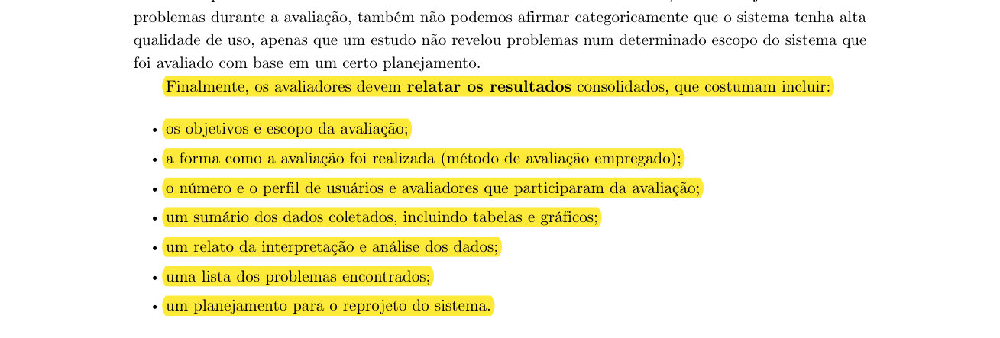
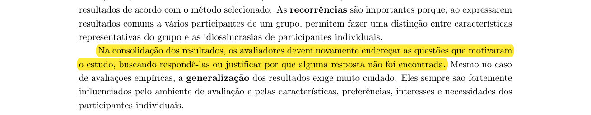
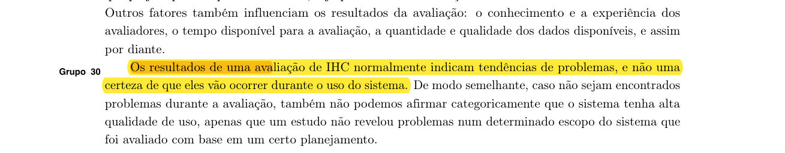
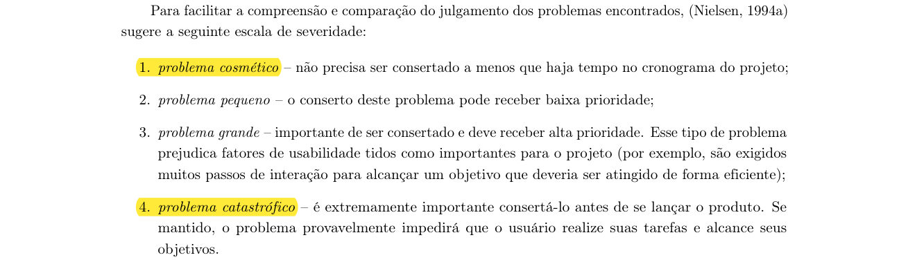
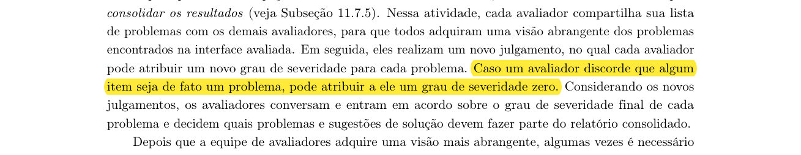
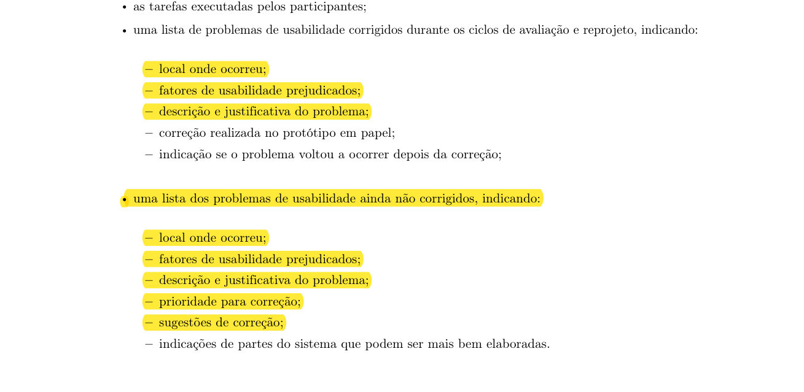
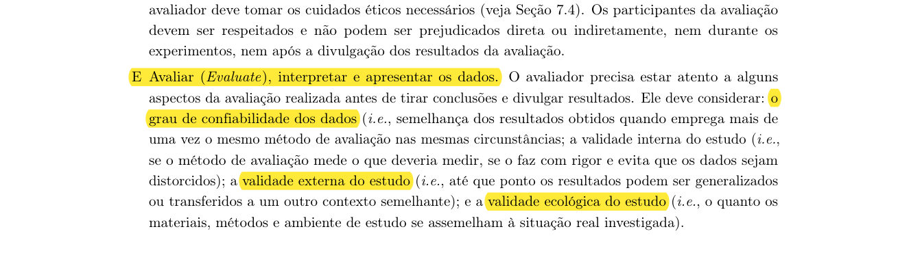

Planejamento do relato dos resultados da avaliação das quatro funcionalidades
Autor: Matheus do Vale Lameira · Revisor: a definir (validação pendente)
Funcionalidades: Gerenciador de Faltas, Simulador de IRA e Street View, Montador de Grade e Avaliação das Disciplinas · Artefatos: storyboard, HTA e CTT, versão 1 (13/10/2026)
Detalha: 2. Relato do storyboard · 4. Relato da análise de tarefas · Estrutura do relato dos resultados (grupo)
Introdução
Este documento é o planejamento do relato dos resultados da avaliação dos storyboards e das análises de tarefas (HTA e CTT) das quatro funcionalidades do projeto NoFluxoUnB na Entrega 4, uma por integrante. Ele reúne em um só relato os quatro planejamentos, com uma seção por funcionalidade, e define, antes das sessões, como os dados serão organizados, interpretados e apresentados, para que os quatro relatos sejam padronizados e comparáveis. Detalha os planejamentos do relato das seções 2 e 4 do documento do grupo e completa a estrutura coletiva do relato (Tabelas 32 a 36). O autor é Matheus do Vale Lameira.
Artefatos relatados. Para cada funcionalidade, o storyboard, a HTA e a CTT na versão 1 (13/10), avaliados em sessões de storyboard, sessões de HTA e CTT e uma inspeção independente. A Tabela 47 mostra a quem pertence cada funcionalidade, quem conduz e anota as sessões e de onde vêm os objetivos e as perguntas. A versão 2 (23/10) incorpora o reprojeto; o relato do protótipo de papel é posterior.
| Funcionalidade | Autor dos artefatos e facilitador | Anotador e 2º avaliador | Sessões | Base na Entrega 2 | Fonte dos objetivos e das perguntas |
|---|---|---|---|---|---|
| Gerenciador de Faltas | Felipe Lopes Pedroza | Victor Andreozzi de La Rocque Couto | S1 a S5, H1 a H5 e I1 (Tabela 27) | Sem tarefa correspondente (TAR-01 e TAR-02 tratam de outras tarefas) | Páginas do grupo (Perguntas, dados e critérios): OBJ-S, OBJ-T, QS e QT. |
| Simulador de IRA e Street View | Matheus do Vale Lameira | Felipe Lopes Pedroza | MS1 a MS5, MH1 a MH3 e MI1 | TAR-04 (simular o IRA do próximo semestre) | Esta página (Tabelas 49, 53 e 54): M-OBJ, M-QS e M-QT. Proposta do autor. |
| Montador de Grade | Tiago Sousa Nepomuceno | Matheus do Vale Lameira | TS1 a TS5, TH1 a TH3 e TI1 | TAR-07 (montar a grade com disciplina obrigatória fixada) | Esta página: T-OBJ, T-QS e T-QT, derivados da TAR-07 (a confirmar por Tiago e Victor). |
| Avaliação das Disciplinas | Victor Andreozzi de La Rocque Couto | Tiago Sousa Nepomuceno | VS1 a VS5, VH1 a VH3 e VI1 | Sem tarefa correspondente (TAR-09 e TAR-10 tratam de mudança de curso e matrícula) | Esta página: V-OBJ, V-QS e V-QT, genéricos (a confirmar por Tiago e Victor). |
Fonte: Matheus do Vale Lameira (2026); funcionalidades e papéis do plano de trabalho (Tabela 37) e do cronograma (seção 5.3). Códigos das sessões das três últimas funcionalidades: proposta do autor, a validar.
O que é fato e o que é proposta. Os artefatos e os papéis vêm do documento e do plano de trabalho do grupo; os objetivos e as perguntas do Gerenciador de Faltas vêm das páginas do grupo; as hipóteses do Simulador de IRA e Street View e do Montador de Grade vêm da HTA da Entrega 2. A escala de severidade vem do livro. Todo o resto, em especial as perguntas do Simulador de IRA e Street View, do Montador de Grade e da Avaliação das Disciplinas, os modelos de tabela, as classificações, os critérios e os exemplos, é proposta do autor, a validar pelo grupo; as seções do Montador de Grade e da Avaliação das Disciplinas dependem da confirmação de Tiago e de Victor. Os quadros dos storyboards, a descrição do Street View e os diagramas das CTT das três últimas funcionalidades ainda não estão no site; onde dependem deles, as tabelas dizem “a ligar aos quadros” ou “a registrar”.
1. Objetivos do relato dos resultados
Os objetivos do relato (OBJ-R) respondem aos objetivos da avaliação das quatro funcionalidades e dizem o que o relato entrega a quem vai usá-lo: o autor de cada artefato, que faz o reprojeto da versão 2, e a equipe, que prototipa em papel em seguida. Os objetivos do Gerenciador de Faltas são os da Tabela 13; os das demais funcionalidades são os da Tabela 49.
| ID | Objetivo do relato | Objetivos da avaliação atendidos (G: Gerenciador; M: Simulador; T: Montador; V: Avaliação) | Para quem importa | |
|---|---|---|---|---|
| OBJ-R1 | Sintetizar se a história do storyboard foi compreendida sem explicação e se o problema que ela representa foi reconhecido como real. | G: OBJ-S1, OBJ-S2 M: M-OBJ-S1, M-OBJ-S2 T: T-OBJ-S1, T-OBJ-S2 V: V-OBJ-S1 | À equipe, que decide o que prototipar, e aos alunos. | |
| OBJ-R2 | Registrar se a ação central do aluno na história (registrar cada falta; informar as menções esperadas; fixar uma disciplina e montar a grade) parece viável e se o esforço compensa o benefício. | G: OBJ-S3 M: M-OBJ-S2, M-OBJ-S5 T: T-OBJ-S2, T-OBJ-S3 V: V-OBJ-S2 | À equipe e aos alunos. | |
| OBJ-R3 | Registrar se o resultado mostrado (painel de faltas, limite e alerta; IRA projetado; grade com créditos e conflitos) responde à dúvida do aluno e se a solução é considerada útil. | G: OBJ-S4 M: M-OBJ-S2, M-OBJ-S5 T: T-OBJ-S3, T-OBJ-S4 V: V-OBJ-S3 | À equipe e aos alunos. | |
| OBJ-R4 | Registrar se o participante entende de onde vem o número ou a informação mostrada e se o storyboard não promete mais do que o sistema entrega; no Simulador, incluir o entendimento do Street View. | G: OBJ-S5 M: M-OBJ-S3, M-OBJ-S4 T: T-OBJ-S3 V: V-OBJ-S2 | À equipe, para não prometer mais do que o sistema entrega. | |
| OBJ-R5 | Confrontar as respostas e a inspeção com a HTA e a CTT: tarefas ausentes, decomposição, planos e operadores, consistência com o storyboard e vocabulário. | G: OBJ-T1 a OBJ-T5 M: M-OBJ-T1 a M-OBJ-T4 T: T-OBJ-T1 a T-OBJ-T4 V: V-OBJ-T1 a V-OBJ-T3 | À equipe de design, que usa os modelos para projetar a interface. | |
| OBJ-R6 | Verificar as hipóteses de partida (Tabela 56) e separar falhas de representação de lacunas de conteúdo. | Os objetivos S e T ligados a cada hipótese | Os mesmos, nas quatro funcionalidades | Ao autor, porque cada tipo de problema pede um reprojeto diferente. |
| OBJ-R7 | Registrar os pontos positivos, para que não se percam no reprojeto. | Todos | Todos | Ao autor e à equipe. |
| OBJ-R8 | Classificar e priorizar os problemas e transformá-los em ajustes rastreáveis para o storyboard, a HTA e a CTT da versão 2 (23/10). | Todos | Todos | Ao autor, que executa o reprojeto, e à equipe, que recebe o que não foi resolvido. |
Fonte: Matheus do Vale Lameira (2026). Objetivos do relato: proposta do autor, a validar.
A Tabela 49 traz os objetivos da avaliação das outras três funcionalidades. A avaliação é formativa: busca verificar a qualidade conceitual dos storyboards e das análises de tarefas antes do protótipo de papel. Os objetivos seguem os tipos que o livro lista (apropriação de tecnologia, ideias e alternativas de design, conformidade com um padrão e problemas na interação e na interface; cap. 11, seção 11.2, p. 264).
| ID | Objetivo | Artefato | Perguntas ligadas |
|---|---|---|---|
| Simulador de IRA e Street View | |||
| M-OBJ-S1 | Verificar se o storyboard representa o problema real de estimar o IRA do próximo semestre, hoje feito em grande parte fora do NoFluxo (TAR-04). | Storyboard | M-QS01, M-QS02, M-QS07 |
| M-OBJ-S2 | Verificar se o participante entende a proposta (o simulador calcula o IRA projetado a partir do histórico importado e do que o aluno planeja cursar) e se a usaria ao planejar o semestre. | Storyboard | M-QS01, M-QS03, M-QS06, M-QS07 |
| M-OBJ-S3 | Verificar se o participante entende que o número mostrado é uma projeção calculada pelo sistema, e não um dado oficial do SIGAA nem uma conta feita pela Darcy. | Storyboard | M-QS03, M-QS04, M-QS07 |
| M-OBJ-S4 | Verificar se o participante entende o que o Street View mostra e para que serve na história (descrição a incluir pelo autor). | Storyboard | M-QS05, M-QS07 |
| M-OBJ-S5 | Avaliar a relevância e a disposição de uso: se o participante usaria o simulador ao planejar o semestre e o que mudaria. | Storyboard | M-QS06, M-QS07 |
| M-OBJ-T1 | Validar a decomposição da HTA: levantar IRA e créditos, estimar as menções, calcular o IRA projetado e decidir o plano do semestre. | HTA e CTT | M-QT01, M-QT04, M-QT07 |
| M-OBJ-T2 | Validar os planos e a ordem das operações (Plano 0: 1, 2, 3 e 4; Plano 3: calcular fora do sistema ou pedir à Darcy) e a modelagem temporal da CTT. | HTA e CTT | M-QT03, M-QT04, M-QT06 |
| M-OBJ-T3 | Identificar tarefas, passos ou situações que faltam nos modelos, como trancamento, reprovação e a comparação de cenários. | HTA e CTT | M-QT01, M-QT02 |
| M-OBJ-T4 | Verificar se os nomes das tarefas usam o vocabulário dos alunos (IRA, menção, créditos, trancamento) e se os modelos são coerentes com o storyboard. | HTA e CTT | M-QT05 |
| Montador de Grade (a confirmar por Tiago e Victor) | |||
| T-OBJ-S1 | Verificar se o storyboard representa o problema real de montar a grade do semestre com uma disciplina obrigatória fixada (Cenários 1 e 7; Larissa e Diego). | Storyboard | T-QS01, T-QS02, T-QS05 |
| T-OBJ-S2 | Verificar se o participante entende a proposta: o montador permite fixar uma disciplina, comparar turmas e ver créditos e conflitos antes de salvar. | Storyboard | T-QS01, T-QS03, T-QS05 |
| T-OBJ-S3 | Verificar se o participante entende como o choque de horário é mostrado e o que faria ao vê-lo. | Storyboard | T-QS04 |
| T-OBJ-S4 | Avaliar a relevância e a disposição de uso: se o participante montaria a grade assim, sem precisar transcrevê-la manualmente para o SIGAA. | Storyboard | T-QS05 |
| T-OBJ-T1 | Validar a decomposição da HTA da TAR-07: fixar a disciplina, adicionar as demais, resolver conflitos e salvar a grade. | HTA e CTT | T-QT01, T-QT05 |
| T-OBJ-T2 | Validar os planos e a ordem das operações (Plano 0: 1, 2, 3 e 4; se houver choque, voltar a 2) e a modelagem temporal da CTT. | HTA e CTT | T-QT01, T-QT03 |
| T-OBJ-T3 | Identificar tarefas ou situações que faltam, como comparar turmas e transcrever a grade para o SIGAA. | HTA e CTT | T-QT02, T-QT04 |
| T-OBJ-T4 | Verificar se os nomes das tarefas usam o vocabulário dos alunos e se os modelos são coerentes com o storyboard. | HTA e CTT | T-QT05 |
| Avaliação das Disciplinas (a confirmar por Tiago e Victor) | |||
| V-OBJ-S1 | Verificar se a história do storyboard é compreendida sem explicação e se o problema que ela representa é reconhecido como real. | Storyboard | V-QS01, V-QS02 |
| V-OBJ-S2 | Verificar se o participante entende o que o sistema faz e de onde vem o resultado mostrado, sem prometer mais do que ele entrega. | Storyboard | V-QS03, V-QS04 |
| V-OBJ-S3 | Avaliar a relevância e a disposição de uso, e coletar sugestões. | Storyboard | V-QS05 |
| V-OBJ-T1 | Verificar se a HTA e a CTT são completas e se o nível de decomposição é adequado. | HTA e CTT | V-QT01, V-QT02 |
| V-OBJ-T2 | Verificar se os planos e os operadores refletem a ordem real das tarefas e se os modelos são coerentes com o storyboard. | HTA e CTT | V-QT01, V-QT03 |
| V-OBJ-T3 | Verificar se os nomes das tarefas usam o vocabulário dos alunos. | HTA e CTT | V-QT04 |
Fonte: Matheus do Vale Lameira (2026); HTA do Simulador de IRA e Street View conforme a TAR-04 e do Montador de Grade conforme a TAR-07; tipos de objetivo de BARBOSA et al. (2021), cap. 11, seção 11.2, p. 264. Objetivos: proposta do autor, a validar; os da Avaliação das Disciplinas são genéricos, pois não há tarefa correspondente na Entrega 2.
2. Fundamentação: consolidação e relato dos resultados (seção 11.7.5)
Concluída a interpretação de cada sessão, os resultados são consolidados e relatados. O livro lista o que o relato costuma incluir, e a estrutura da seção 3 segue essa lista:
“Finalmente, os avaliadores devem relatar os resultados consolidados, que costumam incluir: (...) os objetivos e escopo da avaliação; (...) um sumário dos dados coletados, incluindo tabelas e gráficos; (...) um relato da interpretação e análise dos dados; (...) uma lista dos problemas encontrados; (...) um planejamento para o reprojeto do sistema.”
Fonte: BARBOSA et al. (2021), cap. 11, seção 11.7.5, p. 279.

Na consolidação, cada questão que motivou o estudo deve ser respondida ou ter a ausência de resposta justificada. É o que a matriz de rastreabilidade (Tabela 62) faz:
“Na consolidação dos resultados, os avaliadores devem novamente endereçar as questões que motivaram o estudo, buscando respondê-las ou justificar por que alguma resposta não foi encontrada.”
Fonte: BARBOSA et al. (2021), cap. 11, seção 11.7.5, p. 279.

O relato também diz até onde os resultados valem. Com poucos participantes, eles indicam tendências, e não certezas:
“Os resultados de uma avaliação de IHC normalmente indicam tendências de problemas, e não uma certeza de que eles vão ocorrer durante o uso do sistema.”
Fonte: BARBOSA et al. (2021), cap. 11, seção 11.7.5, p. 279.

3. Estrutura padronizada do relatório final
O relatório final será publicado no site na etapa de relato do cronograma, com as seções abaixo, repetidas para cada uma das quatro funcionalidades. Cada seção usa a tabela-modelo indicada e cobre um item da lista do livro.
| Seção | Conteúdo previsto | Tabela-modelo | Item do livro (p. 279) |
|---|---|---|---|
| 1. Identificação, objetivos e escopo | Funcionalidade, artefatos e versões avaliadas, objetivos do relato e limites do estudo. | Tabelas 47, 48, 49 e 51 | Objetivos e escopo da avaliação |
| 2. Método executado | Entrevista semiestruturada guiada pelos artefatos e inspeção da HTA e da CTT; materiais, ordem das etapas e desvios em relação ao planejamento. | Tabela 51 | Forma como a avaliação foi realizada |
| 3. Participantes e avaliadores | Número e perfil sem identificação, códigos P01 em diante por funcionalidade, papéis de facilitador, anotador e autor do relato. | Tabela 51 | Número e perfil de usuários e avaliadores |
| 4. Resultados do storyboard | Respostas às perguntas de cada funcionalidade, com evidência e classificação. | Tabela 53 | Sumário dos dados coletados |
| 5. Resultados da HTA e da CTT | Respostas às perguntas de cada funcionalidade e discrepâncias da inspeção, com evidência e classificação. | Tabela 54 | Sumário dos dados coletados |
| 6. Pontos positivos | O que os participantes valorizaram e deve ser mantido ou reforçado. | Tabela 55 | Relato da interpretação e análise |
| 7. Hipóteses de partida | Situação de cada hipótese: confirmada, não confirmada ou inconclusiva. | Tabela 56 | Relato da interpretação e análise |
| 8. Comunicação do storyboard | Falhas de representação e lacunas de conteúdo, por quadro. | Tabelas 57 e 58 | Relato da interpretação e análise |
| 9. Problemas encontrados | Registro único de problemas, com natureza, severidade e prioridade. | Tabelas 52 e 59 | Lista dos problemas encontrados |
| 10. Reprojeto | Ajustes para storyboard, HTA e CTT da versão 2, com responsável e situação. | Tabelas 60 e 61 | Planejamento para o reprojeto |
| 11. Limitações e questões inconclusivas | Restrições do método, da amostra e do ambiente; perguntas sem resposta. | Seção 14 deste documento | Escopo e generalização |
| 12. Conclusão e próximos passos | Síntese das perguntas respondidas, principais achados de cada funcionalidade e o que passa ao protótipo de papel. | Tabela 62 | Respostas às questões do estudo |
Fonte: Matheus do Vale Lameira (2026), a partir da lista de BARBOSA et al. (2021), cap. 11, seção 11.7.5, p. 279. Estrutura: proposta do autor, a validar.
4. Registro da sessão
Cada sessão recebe uma ficha de identificação, preenchida por quem anotou. Como o autor do relato nem sempre conduz a sessão, a ficha garante que o relato seja escrito com os mesmos campos para todas. O relato usa apenas dados cuja coleta foi informada e autorizada no termo de consentimento, e nunca registra dado pessoal ou acadêmico do participante, como o IRA real.
| Campo | Gerenciador de Faltas | Simulador de IRA e Street View | Montador de Grade | Avaliação das Disciplinas |
|---|---|---|---|---|
| Sessão e tipo | S1 a S5, H1 a H5 ou I1 | MS1 a MS5, MH1 a MH3 ou MI1 | TS1 a TS5, TH1 a TH3 ou TI1 | VS1 a VS5, VH1 a VH3 ou VI1 |
| Data, horário, modalidade e duração efetiva | A registrar (prevista: 15 a 20 minutos) | A registrar | A registrar | A registrar |
| Facilitador | Felipe | Matheus | Tiago | Victor |
| Anotador e 2º avaliador | Victor | Felipe | Matheus | Tiago |
| Autor do relato | Matheus | Matheus | Matheus | Matheus |
| Participante | A registrar (P01 em diante; HTA e CTT com participantes diferentes dos do storyboard) | A registrar | A registrar | A registrar |
| Perfil do participante (sem identificação) | A registrar: curso, período e experiência com o controle de faltas | A registrar: curso, período e experiência com a estimativa do IRA | A registrar: curso, período e experiência com a montagem da grade | A registrar: curso e período |
| Versão dos artefatos | Versão 1 de 13/10 | Versão 1 de 13/10 | Versão 1 de 13/10 | Versão 1 de 13/10 |
| Forma de registro autorizada | A registrar: anotações, áudio ou ambos, conforme o consentimento (a gravação é item separado do aceite) | A registrar | A registrar | A registrar |
| Intercorrências e desvios do protocolo | A registrar | A registrar | A registrar | A registrar |
Fonte: Matheus do Vale Lameira (2026); papéis do plano de trabalho (Tabela 37) e sessões do Gerenciador de Faltas da Tabela 27. Campos e códigos das demais sessões: proposta do autor, a validar.
Materiais que sustentam o relato:
- anotações do anotador, feitas durante a sessão sem interromper o participante, com o minuto da gravação e a fala literal mais relevante;
- áudio da sessão, somente com autorização, com gravação de reserva;
- ficha do avaliador na inspeção (A1 e A2, sem consulta entre os dois) e planilha de discrepâncias discutidas na reunião de 21/10;
- comentários finais e sugestões espontâneas do participante.
Termos de consentimento e gravações ficam fora do repositório público e são descartados quando deixam de ser necessários, como em Questões práticas e éticas.
5. Metodologia de análise e critérios de severidade
A análise é qualitativa e tem duas etapas: primeiro cada sessão é interpretada por si (análise intraparticipante) e depois os resultados são consolidados (análise interparticipante). Os passos são:
- Revisar as anotações e, se houver autorização, o áudio, no mesmo dia da sessão.
- Escrever, para cada pergunta, uma síntese fiel da resposta e a evidência: fala literal curta, com o código do participante e o minuto da gravação, sem alterar o sentido.
- Marcar os trechos em que o participante hesita ou pede explicação, interpreta de outro jeito o que o artefato queria mostrar, descreve uma prática diferente da modelada ou sugere algo que não está nos artefatos.
- Separar o que o participante disse, o que o avaliador observou e o que o avaliador interpretou, sem completar lacunas por suposição.
- Consolidar as sessões de cada funcionalidade, buscando recorrências. “Recorrente” segue a definição do grupo (Perguntas, dados e critérios): apontado por pelo menos 2 participantes ou pelos dois avaliadores, de forma independente. A contagem é dada como “n de N participantes”, nunca como porcentagem isolada.
- Classificar cada problema por natureza (representação ou conteúdo) e por severidade, com a escala da Tabela 52. Os dois avaliadores atribuem a severidade cada um por si e depois chegam a um acordo; se um deles discorda de que o item seja problema, atribui o grau zero.
- Responder a cada questão do estudo ou justificar por que ela ficou sem resposta (Tabela 62).
O livro traz a escala de severidade, de problema cosmético a catastrófico, e permite o grau zero quando o avaliador discorda de que o item seja problema. A Tabela 52 usa essa escala e a liga às quatro prioridades que o grupo já definiu no relato coletivo, para que os relatos sejam comparáveis.


| Nível | Classificação (livro) | Significado | Prioridade do grupo | Exemplos (G: Gerenciador; M: Simulador; T: Montador; V: Avaliação) |
|---|---|---|---|---|
| 0 | Não é um problema | O avaliador discorda de que o item seja problema, ou o comentário não afeta a compreensão nem a tarefa. | Não entra na lista | Participante sugere outra cor para um desenho do quadro (vale para as quatro funcionalidades). |
| 1 | Cosmético | Não precisa ser consertado a menos que haja tempo no cronograma. | Baixa | G: estranha o rótulo “limite”, mas entende pelo contexto. M: estranha o rótulo “menção esperada”, mas entende. T: estranha o ícone de fixar, mas entende pelo texto. V: estranha um rótulo, mas entende pelo contexto. |
| 2 | Pequeno | O conserto pode receber baixa prioridade. | Média | G: só entende o número ao lado do limite após a sondagem. M: só entende que o número é uma projeção depois de reler o quadro. T: só percebe o aviso de choque de horário depois de reler o quadro. V: só entende o resultado mostrado após a sondagem. |
| 3 | Grande | Importante de consertar; prejudica fatores de usabilidade tidos como importantes para o projeto. | Alta | G: desistiria de registrar as faltas por causa do esforço (OBJ-S3). M: refaria a conta fora do sistema a cada troca de disciplina (passo 3.1 da HTA). T: continuaria transcrevendo a grade à mão para o SIGAA. V: não vê utilidade no resultado mostrado. |
| 4 | Catastrófico | Extremamente importante de consertar; se mantido, provavelmente impede o usuário de realizar a tarefa. | Urgente | G: entende o total como dado oficial do SIGAA (OBJ-S5). M: entende o número como o IRA oficial do SIGAA (M-OBJ-S3). T: entende que a grade salva já é a matrícula no SIGAA. V: entende errado o que o sistema faz e confia além do que ele garante. |
Fonte: escala de Nielsen (1994a), citada por BARBOSA et al. (2021), cap. 12, seção 12.1.1, p. 284; prioridades do grupo no relato coletivo. Exemplos: Matheus do Vale Lameira (2026), proposta do autor, a validar.
6. Resultados do storyboard
A Tabela 53 recebe a consolidação das respostas às perguntas do storyboard de cada funcionalidade: as do Gerenciador de Faltas estão na Tabela 14 (QS); as demais são as desta tabela (M-QS, T-QS e V-QS), propostas pelo autor. As colunas ID, foco e quadro estão preenchidas; as demais são campos de registro.
| ID | Foco | Quadro | Síntese da resposta | Evidência (participante e minuto) | Classificação | Ajuste necessário |
|---|---|---|---|---|---|---|
| Gerenciador de Faltas | ||||||
| QS01 | Sequência da história | Quadros 1 a 6 | A registrar | A registrar | A registrar | A registrar |
| QS02 | Reconhecimento do problema | Quadros 1 e 2 | A registrar | A registrar | A registrar | A registrar |
| QS03 | Viabilidade do registro manual | Quadro 4 | A registrar | A registrar | A registrar | A registrar |
| QS04 | Leitura do painel | Quadro 5 | A registrar | A registrar | A registrar | A registrar |
| QS05 | Origem do total | Quadros 4 e 5 | A registrar | A registrar | A registrar | A registrar |
| QS06 | Esforço e benefício do registro | Quadros 4 e 5 | A registrar | A registrar | A registrar | A registrar |
| QS07 | Condições de registro e de abandono | Quadro 4 | A registrar | A registrar | A registrar | A registrar |
| QS08 | Promessa do quadro 6 | Quadro 6 | A registrar | A registrar | A registrar | A registrar |
| QS09 | Utilidade e rotina | Quadros 3 a 6 | A registrar | A registrar | A registrar | A registrar |
| QS10 | Frequência do problema | Quadros 1 e 2 | A registrar | A registrar | A registrar | A registrar |
| QS11 | Sugestões e fecho | Quadros 1 a 6 | A registrar | A registrar | A registrar | A registrar |
| Simulador de IRA e Street View | ||||||
| M-QS01 | Clareza narrativa (“Com suas palavras, o que acontece nesta história?”) | A ligar aos quadros | A registrar | A registrar | A registrar | A registrar |
| M-QS02 | Verossimilhança (já precisou estimar o IRA para decidir o que cursar?) | A ligar aos quadros | A registrar | A registrar | A registrar | A registrar |
| M-QS03 | Atuação do sistema (o que o sistema faz com as informações da história?) | A ligar aos quadros | A registrar | A registrar | A registrar | A registrar |
| M-QS04 | Origem do número (de onde vem e o quanto confiaria) | A ligar aos quadros | A registrar | A registrar | A registrar | A registrar |
| M-QS05 | Street View (o que mostra e para que serve na história) | A ligar aos quadros | A registrar | A registrar | A registrar | A registrar |
| M-QS06 | Engajamento (usaria ao planejar o semestre? o que mudaria?) | A ligar aos quadros | A registrar | A registrar | A registrar | A registrar |
| M-QS07 | Melhorias (alguma parte não entendida ou que mudaria?) | A ligar aos quadros | A registrar | A registrar | A registrar | A registrar |
| Montador de Grade (a confirmar por Tiago e Victor) | ||||||
| T-QS01 | Clareza narrativa (“Com suas palavras, o que acontece nesta história?”) | A ligar aos quadros | A registrar | A registrar | A registrar | A registrar |
| T-QS02 | Verossimilhança (já montou uma grade com uma disciplina obrigatória fixa? como foi?) | A ligar aos quadros | A registrar | A registrar | A registrar | A registrar |
| T-QS03 | Fixar a disciplina (o que o recurso de fixar faz e para que serve) | A ligar aos quadros | A registrar | A registrar | A registrar | A registrar |
| T-QS04 | Choque de horário (como o aviso aparece e o que faria em seguida) | A ligar aos quadros | A registrar | A registrar | A registrar | A registrar |
| T-QS05 | Engajamento e melhorias (montaria a grade assim? o que mudaria?) | A ligar aos quadros | A registrar | A registrar | A registrar | A registrar |
| Avaliação das Disciplinas (a confirmar por Tiago e Victor) | ||||||
| V-QS01 | Clareza narrativa (“Com suas palavras, o que acontece nesta história?”) | A ligar aos quadros | A registrar | A registrar | A registrar | A registrar |
| V-QS02 | Verossimilhança (a situação lhe parece real? já passou por ela?) | A ligar aos quadros | A registrar | A registrar | A registrar | A registrar |
| V-QS03 | Atuação do sistema (o que o sistema faz com as informações da história?) | A ligar aos quadros | A registrar | A registrar | A registrar | A registrar |
| V-QS04 | Origem do resultado (de onde vem o que o sistema mostra e o quanto confiaria) | A ligar aos quadros | A registrar | A registrar | A registrar | A registrar |
| V-QS05 | Engajamento e melhorias (usaria? o que mudaria?) | A ligar aos quadros | A registrar | A registrar | A registrar | A registrar |
Fonte: Matheus do Vale Lameira (2026); IDs, focos e quadros do Gerenciador de Faltas da Tabela 14; perguntas das demais funcionalidades: proposta do autor, a validar. Todas as células de resultado são campos de registro.
Classificações previstas. Para as perguntas de compreensão (QS01, QS04, QS05, QS08 e as de clareza, atuação do sistema, origem e Street View das demais): Compreendido, Parcialmente compreendido, Não compreendido ou Inconclusivo. Para as de reconhecimento e verossimilhança: Reconhece a situação, Reconhece em parte ou Não reconhece. Para as de registro do Gerenciador (QS03, QS06 e QS07): Viável, Viável com condições (anotando as condições) ou Inviável. Para as demais, o relato traz a resposta e a categoria relatada, sem transformar preferência individual em aprovação do artefato.
7. Resultados da HTA e da CTT
A Tabela 54 recebe as respostas às perguntas da HTA e da CTT de cada funcionalidade (QT, na Tabela 14; M-QT, T-QT e V-QT, propostas do autor) e as discrepâncias da inspeção. Quando a evidência disser respeito a apenas um dos modelos, ela é registrada separadamente. A opinião de um participante sobre como as faltas são lançadas, o IRA é calculado ou a matrícula é feita oficialmente é registrada como hipótese e só vira correção depois de conferida na fonte oficial.
| ID | Foco | Artefato ou nó | Síntese da resposta | Evidência (participante e minuto) | Classificação | Ajuste necessário |
|---|---|---|---|---|---|---|
| Gerenciador de Faltas | ||||||
| QT01 | Tarefas e situações ausentes | HTA e CTT | A registrar | A registrar | A registrar | A registrar |
| QT02 | Nível de decomposição | HTA | A registrar | A registrar | A registrar | A registrar |
| QT03 | Ordem das etapas (planos da HTA) | HTA (planos) | A registrar | A registrar | A registrar | A registrar |
| QT04 | Consistência entre os modelos | HTA e CTT; storyboard (inspeção) | A registrar | A registrar | A registrar | A registrar |
| QT05 | Vocabulário das tarefas | HTA e CTT (nomes das tarefas) | A registrar | A registrar | A registrar | A registrar |
| QT06 | Prática atual de controle de faltas | Nenhum (antes dos modelos) | A registrar | A registrar | A registrar | A registrar |
| QT07 | Situações específicas | HTA e CTT | A registrar | A registrar | A registrar | A registrar |
| QT08 | Fluxo e operadores da CTT | CTT | A registrar | A registrar | A registrar | A registrar |
| QT09 | Correção de registros | HTA e CTT (ramo de correção) | A registrar | A registrar | A registrar | A registrar |
| QT10 | Conciliação com as faltas oficiais do SIGAA | HTA e CTT (ramo de conciliação) | A registrar | A registrar | A registrar | A registrar |
| QT11 | Sugestões e fecho | HTA e CTT | A registrar | A registrar | A registrar | A registrar |
| Simulador de IRA e Street View | ||||||
| M-QT01 | Sequência (passos 1 a 4 correspondem ao que o participante faria?) | 0 e 1 a 4 | A registrar | A registrar | A registrar | A registrar |
| M-QT02 | Estimar menções (que informação usa; trancamento e reprovação) | 2, 2.1 e 2.2 | A registrar | A registrar | A registrar | A registrar |
| M-QT03 | Cálculo (planilha, Darcy ou simulador) | 3, 3.1 e 3.2 | A registrar | A registrar | A registrar | A registrar |
| M-QT04 | Decidir o plano (compara cenários antes de decidir?) | 4, 4.1 e 4.2 | A registrar | A registrar | A registrar | A registrar |
| M-QT05 | Vocabulário (IRA, menção, créditos, trancamento) | Todos | A registrar | A registrar | A registrar | A registrar |
| M-QT06 | Ordem na CTT (calcular ou pedir à Darcy) | CTT (a registrar) | A registrar | A registrar | A registrar | A registrar |
| M-QT07 | Complexidade (alguma etapa difícil ou longa demais?) | Todos | A registrar | A registrar | A registrar | A registrar |
| Montador de Grade (a confirmar por Tiago e Victor) | ||||||
| T-QT01 | Sequência (passos 1 a 4 e volta ao passo 2 no choque correspondem ao que faria?) | 0 e 1 a 4 | A registrar | A registrar | A registrar | A registrar |
| T-QT02 | Fixar e escolher turma (que informação usa para escolher a turma) | 1, 1.1 e 1.2 | A registrar | A registrar | A registrar | A registrar |
| T-QT03 | Conflito de horário (como percebe e como resolve) | 3, 3.1 e 3.2 | A registrar | A registrar | A registrar | A registrar |
| T-QT04 | Salvar, exportar e SIGAA (como leva a grade para a matrícula) | 4, 4.1 e 4.2 | A registrar | A registrar | A registrar | A registrar |
| T-QT05 | Vocabulário e complexidade (nomes dos passos; etapa difícil ou longa) | Todos | A registrar | A registrar | A registrar | A registrar |
| Avaliação das Disciplinas (a confirmar por Tiago e Victor) | ||||||
| V-QT01 | Sequência e completude (os passos correspondem ao que faria? falta ou sobra algum?) | HTA e CTT (a registrar) | A registrar | A registrar | A registrar | A registrar |
| V-QT02 | Nível de decomposição (detalhe adequado?) | HTA | A registrar | A registrar | A registrar | A registrar |
| V-QT03 | Ordem e operadores (a ordem na HTA e na CTT reflete o que faz?) | HTA (planos) e CTT | A registrar | A registrar | A registrar | A registrar |
| V-QT04 | Vocabulário e complexidade (nomes dos passos; etapa difícil) | Todos | A registrar | A registrar | A registrar | A registrar |
Fonte: Matheus do Vale Lameira (2026); IDs, focos e artefatos do Gerenciador de Faltas da Tabela 14; perguntas e nós das demais funcionalidades: proposta do autor, a validar, com nós da HTA conforme a TAR-04 e a TAR-07. Todas as células de resultado são campos de registro.
| Classificação | Quando se aplica |
|---|---|
| Confirmado | O participante ou os dois avaliadores consideram o passo, o plano ou o operador compatível com a prática e justificam a resposta. |
| Revisar | Há evidência de passo ausente, passo demais, ordem inadequada, vocabulário estranho, inconsistência com outro artefato ou dificuldade de compreensão. |
| Inconclusivo | A resposta não traz dados suficientes ou depende de informação oficial ainda não conferida. |
Fonte: Matheus do Vale Lameira (2026). Classificações: proposta do autor, a validar.
8. Registro de pontos positivos
Os pontos positivos são registrados para não se perderem no reprojeto. As categorias propostas são reconhecimento da situação, clareza, valor da proposta e confiança no resultado. A ação é manter (não mexer na versão 2) ou reforçar (usar como referência para outras partes).
| ID | Funcionalidade | Ponto positivo | Artefato e local | Categoria | Evidência | Ação (manter ou reforçar) |
|---|---|---|---|---|---|---|
| POS-01 | Gerenciador de Faltas | A registrar | A registrar (quadro, nó ou operador) | A registrar | A registrar | A registrar |
| POS-02 | Simulador de IRA e Street View | A registrar | A registrar | A registrar | A registrar | A registrar |
| POS-03 | Montador de Grade | A registrar | A registrar | A registrar | A registrar | A registrar |
| POS-04 | Avaliação das Disciplinas | A registrar | A registrar | A registrar | A registrar | A registrar |
Fonte: Matheus do Vale Lameira (2026). Categorias e ações: proposta do autor, a validar.
9. Verificação das hipóteses de partida
As hipóteses vêm de fontes já publicadas: as premissas do documento do grupo e o mapa entre quadros e tarefas (Tabela 15), para o Gerenciador de Faltas; a análise HTA da TAR-04 (Tabela 14 da Entrega 2), para o Simulador de IRA e Street View; e a análise HTA da TAR-07 (Tabela 17 da Entrega 2), para o Montador de Grade. Para a Avaliação das Disciplinas não há tarefa correspondente na Entrega 2, e as hipóteses ficam a definir por Victor. Nenhuma foi testada com participantes, e a situação só é preenchida depois das sessões.
| ID | Hipótese | Origem | Pergunta(s) | Evidência coletada | Situação |
|---|---|---|---|---|---|
| Gerenciador de Faltas | |||||
| HP1 | O aluno perde a conta das faltas quando o professor só as lança no fim do semestre, e reconhece isso como real e frequente. | OBJ-S2; quadros 1 e 2 | QS02, QS10 | A registrar | Confirmada, não confirmada ou inconclusiva |
| HP2 | Registrar cada falta manualmente é viável, e o esforço compensa o benefício. | OBJ-S3; quadro 4 | QS03, QS06, QS07 | A registrar | A registrar |
| HP3 | O painel com faltas, limite e alerta responde a “quantas faltas ainda posso ter?”. | OBJ-S4; quadro 5 | QS04, QS09 | A registrar | A registrar |
| HP4 | O aluno entende que o total vem dos registros dele, e não de um dado oficial, e o quadro 6 não promete mais do que o sistema entrega. | OBJ-S5; quadros 4 a 6 | QS05, QS08 | A registrar | A registrar |
| HP5 | A HTA e a CTT cobrem as situações reais: várias faltas de uma vez, falta de um dia anterior, falta justificada e disciplina trancada. | OBJ-T1 | QT01, QT06, QT07 | A registrar | A registrar |
| HP6 | O storyboard tem lacunas em relação aos modelos: não mostra a correção de um registro nem a conferência com o SIGAA. | Tabela 15 de Perguntas (linhas “sem quadro”) | QT09, QT10 | A registrar | A registrar |
| HP7 | O nível de decomposição da HTA e os operadores da CTT refletem a ordem em que os alunos agem. | OBJ-T2, OBJ-T3 | QT02, QT03, QT08 | A registrar | A registrar |
| Simulador de IRA e Street View | |||||
| M-HP1 | O IRA atual e os créditos cursados não aparecem no NoFluxo depois da importação, e o estudante precisa consultar o histórico do SIGAA. | TAR-04, objetivo 1 | M-QS02, M-QT01 | A registrar | Confirmada, não confirmada ou inconclusiva |
| M-HP2 | Ao estimar as menções, o estudante tende ao otimismo e atribui a menção máxima a todas as disciplinas. | TAR-04, operação 2.1 | M-QT02 | A registrar | A registrar |
| M-HP3 | O efeito de um trancamento ou de uma reprovação no IRA não é intuitivo. | TAR-04, operação 2.2 | M-QT02 | A registrar | A registrar |
| M-HP4 | Poucos estudantes conhecem a fórmula do IRA da UnB e preferem que o cálculo seja feito pelo sistema. | TAR-04, objetivo 3 | M-QS04, M-QT03 | A registrar | A registrar |
| M-HP5 | Calcular em planilha ou pedir o cálculo à Darcy gera erro ou desconfiança; o estudante entende que a Darcy só explica o resultado e que o cálculo é do sistema. | TAR-04, operações 3.1 e 3.2 | M-QS03, M-QS04, M-QT03 | A registrar | A registrar |
| M-HP6 | Sem ligação entre o IRA simulado e a grade, o estudante refaz a conta a cada troca de disciplina; o recálculo automático é percebido como ganho. | TAR-04, objetivo 4 | M-QS06, M-QT04 | A registrar | A registrar |
| M-HP7 | O número mostrado é entendido como uma projeção calculada pelo sistema, e não como dado oficial do SIGAA. | M-OBJ-S3 | M-QS03, M-QS04 | A registrar | A registrar |
| Montador de Grade (a confirmar por Tiago e Victor) | |||||
| T-HP1 | A matrícula real acontece no SIGAA, e o estudante precisa transcrever a grade montada no NoFluxo manualmente; um resumo com códigos e turmas facilita. | TAR-07, objetivo 0 | T-QS05, T-QT04 | A registrar | Confirmada, não confirmada ou inconclusiva |
| T-HP2 | Sem uma forma de fixar a disciplina obrigatória, o estudante a remove sem querer ao reorganizar a grade. | TAR-07, objetivo 1 | T-QS03 | A registrar | A registrar |
| T-HP3 | A lista de disciplinas mistura liberadas e bloqueadas, o que atrapalha a escolha. | TAR-07, operação 1.1 | T-QT02 | A registrar | A registrar |
| T-HP4 | Comparar turmas exige abrir uma a uma, e o estudante precisa de uma comparação de horário, vagas e professor. | TAR-07, operação 1.2 | T-QT02 | A registrar | A registrar |
| T-HP5 | O estudante não vê quantos créditos já somou ao adicionar disciplinas. | TAR-07, objetivo 2 | T-QT01 | A registrar | A registrar |
| T-HP6 | O choque de horário só é percebido depois de adicionar a disciplina, e o alerta não diz com qual disciplina ocorre o conflito. | TAR-07, objetivo 3 e operação 3.1 | T-QS04, T-QT03 | A registrar | A registrar |
| T-HP7 | Trocar de turma exige remover e adicionar de novo, e sem confirmação clara o estudante não sabe se a grade foi salva. | TAR-07, operação 3.2 e objetivo 4 | T-QT03, T-QT04 | A registrar | A registrar |
| Avaliação das Disciplinas (a confirmar por Tiago e Victor) | |||||
| V-HP1 | A definir por Victor, a partir do storyboard e da HTA da funcionalidade (não há tarefa correspondente na Entrega 2). | A definir por Victor | V-QS e V-QT | A registrar | Confirmada, não confirmada ou inconclusiva |
Fonte: Matheus do Vale Lameira (2026); hipóteses do Gerenciador de Faltas derivadas das Tabelas 13 e 15 de Perguntas, dados e critérios; do Simulador de IRA e Street View, da Tabela 14 da TAR-04; do Montador de Grade, da Tabela 17 da TAR-07. Todas as células de resultado são campos de registro.
10. Comunicação do storyboard: falhas de representação e lacunas de conteúdo
Um mesmo sinal, como “o participante não entendeu o quadro”, pode ter duas causas que pedem reprojetos diferentes. Por isso cada ocorrência é classificada em um dos dois tipos:
- Falha de representação: o participante não entende, ou entende errado, o que o quadro mostra por causa de como ele foi desenhado (enquadramento, texto, detalhe ou sequência).
- Lacuna de conteúdo: o participante entende o quadro, mas sente falta de informação sobre a situação de uso, a regra de cálculo ou a origem do número, ou o storyboard não mostra uma tarefa que os modelos têm.
A Tabela 57 traz os critérios de análise e o sinal de falha de cada um, ligados aos objetivos das quatro avaliações. Os critérios são proposta do autor, a validar no teste-piloto.
| Critério | Pergunta de análise | Sinal de falha | Objetivos (G; M; T; V) |
|---|---|---|---|
| Sequência narrativa | A ordem dos quadros conta a história sem precisar de explicação? | O participante reordena os quadros ou pede explicação entre eles. | OBJ-S1; M-OBJ-S1, S2; T-OBJ-S1; V-OBJ-S1 |
| Reconhecimento do problema | Os quadros iniciais mostram a situação de modo reconhecível? | O participante não vê relação com a própria experiência. | OBJ-S2; M-OBJ-S1; T-OBJ-S1; V-OBJ-S1 |
| Clareza da ação do aluno | O quadro mostra o que o aluno vê e faz (registrar uma falta; informar menções; fixar uma disciplina e escolher a turma)? | O participante não consegue dizer como a ação é feita. | OBJ-S3; M-OBJ-S2; T-OBJ-S2, S3; V-OBJ-S2 |
| Legibilidade do resultado | O painel, o IRA projetado ou a grade com créditos e conflitos pode ser lido sem ajuda? | O participante não entende o número, o aviso de choque ou o valor projetado. | OBJ-S4; M-OBJ-S2, S3; T-OBJ-S3; V-OBJ-S3 |
| Origem do número ou da informação | Fica claro de onde vem o que é mostrado (registros do aluno; projeção do sistema; dados do SIGAA)? | O participante trata o número como dado oficial do SIGAA ou como conta feita pela Darcy. | OBJ-S5; M-OBJ-S3; T-OBJ-S3; V-OBJ-S2 |
| Promessa do último quadro | O quadro promete só o que o sistema entrega? | O participante entende que passa a saber ou a poder mais do que o sistema garante. | OBJ-S5; M-OBJ-S3, S5; T-OBJ-S4; V-OBJ-S2 |
| Street View | O quadro mostra o que o Street View faz e para que serve na história? | O participante não descreve a função com as próprias palavras. | Só M-OBJ-S4 |
| Uso de texto | Legendas e balões complementam a imagem? | O participante só entende lendo a legenda ou ignora o texto. | OBJ-S1; M-OBJ-S1; T-OBJ-S1; V-OBJ-S1 |
| Cobertura em relação aos modelos | As tarefas da HTA e da CTT aparecem em algum quadro? | O participante percebe a falta de uma tarefa (correção de registro, conferência com o SIGAA, comparação de cenários ou de turmas). | OBJ-T4; M-OBJ-T3, T4; T-OBJ-T3, T4; V-OBJ-T2 |
Fonte: Matheus do Vale Lameira (2026); objetivos da Tabela 13 e da Tabela 49. Critérios: proposta do autor, a validar.
| ID | Funcionalidade | Tipo (representação ou conteúdo) | Quadro | Critério (Tabela 57) | Descrição da falha | Evidência | Severidade (0 a 4) |
|---|---|---|---|---|---|---|---|
| COM-01 | Gerenciador de Faltas | A registrar | A registrar | A registrar | A registrar | A registrar | A registrar |
| COM-02 | Simulador de IRA e Street View | A registrar | A registrar | A registrar | A registrar | A registrar | A registrar |
| COM-03 | Montador de Grade | A registrar | A registrar | A registrar | A registrar | A registrar | A registrar |
| COM-04 | Avaliação das Disciplinas | A registrar | A registrar | A registrar | A registrar | A registrar | A registrar |
Fonte: Matheus do Vale Lameira (2026). Acrescentam-se linhas conforme as ocorrências. Todas as células de resultado são campos de registro.
11. Registro e priorização de problemas
Cada problema é registrado uma única vez, mesmo quando aparece em mais de uma pergunta, reunindo as ocorrências de sessões, hipóteses e falhas. Os campos seguem o que o livro pede para relatar problemas: local, fatores prejudicados, descrição e justificativa, prioridade e sugestões de correção.

No storyboard o “local” é o quadro; na HTA e na CTT é o nó, o plano ou o operador. Os problemas do Gerenciador de Faltas recebem os prefixos PS (storyboard) e PT (HTA e CTT), como no relato coletivo (Tabela 35); os do Simulador de IRA e Street View, M-PS e M-PT; os do Montador de Grade, T-PS e T-PT; os da Avaliação das Disciplinas, V-PS e V-PT.
| ID | Artefato e local | Natureza (representação ou conteúdo) | Origem (pergunta, hipótese ou falha) | Descrição e evidência | Severidade (0 a 4) e prioridade | Impacto na compreensão ou na tarefa | Recomendação |
|---|---|---|---|---|---|---|---|
| PS-01 | Gerenciador de Faltas: storyboard; a registrar o quadro | A registrar | A registrar (QS, HP ou COM) | A registrar | A registrar | A registrar | A registrar |
| PT-01 | Gerenciador de Faltas: HTA ou CTT; a registrar o nó, plano ou operador | A registrar | A registrar (QT ou HP) | A registrar | A registrar | A registrar | A registrar |
| M-PS01 | Simulador de IRA e Street View: storyboard; a registrar o quadro | A registrar | A registrar (M-QS, M-HP ou COM) | A registrar | A registrar | A registrar | A registrar |
| M-PT01 | Simulador de IRA e Street View: HTA ou CTT; a registrar o nó, plano ou operador | A registrar | A registrar (M-QT ou M-HP) | A registrar | A registrar | A registrar | A registrar |
| T-PS01 | Montador de Grade: storyboard; a registrar o quadro | A registrar | A registrar (T-QS, T-HP ou COM) | A registrar | A registrar | A registrar | A registrar |
| T-PT01 | Montador de Grade: HTA ou CTT; a registrar o nó, plano ou operador | A registrar | A registrar (T-QT ou T-HP) | A registrar | A registrar | A registrar | A registrar |
| V-PS01 | Avaliação das Disciplinas: storyboard; a registrar o quadro | A registrar | A registrar (V-QS, V-HP ou COM) | A registrar | A registrar | A registrar | A registrar |
| V-PT01 | Avaliação das Disciplinas: HTA ou CTT; a registrar o nó, plano ou operador | A registrar | A registrar (V-QT ou V-HP) | A registrar | A registrar | A registrar | A registrar |
Fonte: Matheus do Vale Lameira (2026), com campos inspirados em BARBOSA et al. (2021), cap. 12, seção 12.2.3, p. 319. Acrescentam-se linhas conforme os problemas encontrados. Todas as células de resultado são campos de registro.
12. Planejamento do reprojeto e lista de ajustes
Cada problema da Tabela 59 vira um ajuste da Tabela 60. O ciclo segue o cronograma do grupo: a versão 1 de storyboard, HTA e CTT (13/10) é avaliada, e a versão 2 (23/10) incorpora o reprojeto. Como proposta, o autor do artefato executa o ajuste (Felipe, Matheus, Tiago ou Victor, conforme a funcionalidade) e o integrante seguinte na ordem do revezamento revisa a consolidação. O que a versão 2 não resolver permanece na lista, com a mesma prioridade, e passa para o planejamento do protótipo de papel.
| ID | Funcionalidade | Problema de origem | Ajuste proposto | Artefato afetado | Prioridade | Responsável | Situação |
|---|---|---|---|---|---|---|---|
| AJ-01 | Gerenciador de Faltas | PS ou PT (a confirmar) | A registrar | Storyboard, HTA ou CTT da versão 2 | A registrar | Felipe (proposta) | A fazer, em andamento, feito na versão 2, adiado para o protótipo de papel ou descartado (com justificativa) |
| AJ-02 | Simulador de IRA e Street View | M-PS ou M-PT (a confirmar) | A registrar | Storyboard, HTA ou CTT da versão 2 | A registrar | Matheus (proposta) | A registrar |
| AJ-03 | Montador de Grade | T-PS ou T-PT (a confirmar) | A registrar | Storyboard, HTA ou CTT da versão 2 | A registrar | Tiago (proposta) | A registrar |
| AJ-04 | Avaliação das Disciplinas | V-PS ou V-PT (a confirmar) | A registrar | Storyboard, HTA ou CTT da versão 2 | A registrar | Victor (proposta) | A registrar |
Fonte: Matheus do Vale Lameira (2026). Campos e valores de situação: proposta do autor, a validar.
Alterações já previstas, a reavaliar depois das sessões. Elas são candidatas a ajuste e só entram na Tabela 60 se a hipótese correspondente for confirmada:
- Gerenciador de Faltas, HP2: simplificar o registro de faltas (exemplo já citado no relato coletivo).
- Gerenciador de Faltas, HP4: reforçar, nos quadros 4 a 6, que o total vem dos registros do aluno.
- Gerenciador de Faltas, HP6: avaliar um quadro para corrigir um registro e outro para conferir o total com o SIGAA.
- Simulador de IRA e Street View, M-HP1: exibir o IRA atual e os créditos integralizados no painel do estudante.
- Simulador de IRA e Street View, M-HP2: oferecer cenários prontos (otimista, provável e pessimista) ao estimar as menções.
- Simulador de IRA e Street View, M-HP3: permitir marcar a disciplina como “trancar” e ver o efeito separadamente.
- Simulador de IRA e Street View, M-HP4 e M-HP5: calcular no sistema, com a fórmula documentada em linguagem simples, e deixar a Darcy apenas explicar o resultado.
- Simulador de IRA e Street View, M-HP6: recalcular o IRA projetado automaticamente a cada alteração da grade.
- Montador de Grade, T-HP1: resumo final com códigos e turmas prontos para copiar para o SIGAA.
- Montador de Grade, T-HP2: ação “fixar” (cadeado) que impede a remoção e a troca de turma acidentais.
- Montador de Grade, T-HP3 e T-HP4: separar ou filtrar as disciplinas liberadas e comparar as turmas (horário, vagas e avaliação do professor) em uma tabela.
- Montador de Grade, T-HP5: contador de créditos do semestre sempre visível.
- Montador de Grade, T-HP6 e T-HP7: indicar o choque antes de adicionar, nomeando as duas disciplinas e o horário, trocar a turma direto no bloco da grade e confirmar de forma visível que a grade foi salva.
| Severidade | Prioridade | Tratamento | Prazo |
|---|---|---|---|
| 4 | Urgente | Corrigir na versão 2, antes de qualquer outra alteração. | Até 23/10 |
| 3 | Alta | Corrigir na versão 2. | Até 23/10 |
| 2 | Média | Corrigir na versão 2 se houver tempo, ou levar como requisito para o protótipo de papel. | Até 23/10, ou protótipo de papel (versão 2 em 24/10) |
| 1 | Baixa | Registrar e corrigir se houver tempo. | Sem prazo fixo |
| 0 | Não entra na lista | Registrar a decisão e, se houver, a sugestão, sem ação obrigatória. | Não se aplica |
Fonte: Matheus do Vale Lameira (2026), com as prioridades do relato coletivo e as datas do plano de trabalho. Tratamento: proposta do autor, a validar.
13. Interpretação e rastreabilidade
A Tabela 62 liga cada objetivo da avaliação às perguntas que o investigam e recebe, depois das sessões, a evidência, a conclusão, o artefato afetado e a ação. Assim cada conclusão aponta para a evidência que a sustenta, e cada questão do estudo é respondida ou tem a ausência de resposta justificada.
| Objetivo da avaliação | Perguntas relacionadas | Evidência | Conclusão | Artefato | Ação decorrente |
|---|---|---|---|---|---|
| Gerenciador de Faltas | |||||
| OBJ-S1 | QS01, QS11 | A registrar | A registrar | Storyboard | Manter, revisar ou verificar (a registrar) |
| OBJ-S2 | QS02, QS10 | A registrar | A registrar | Storyboard | Manter, revisar ou verificar (a registrar) |
| OBJ-S3 | QS03, QS06, QS07 | A registrar | A registrar | Storyboard | Manter, revisar ou verificar (a registrar) |
| OBJ-S4 | QS04, QS09 | A registrar | A registrar | Storyboard | Manter, revisar ou verificar (a registrar) |
| OBJ-S5 | QS05, QS08 | A registrar | A registrar | Storyboard | Manter, revisar ou verificar (a registrar) |
| OBJ-T1 | QT01, QT06, QT07, QT09, QT10 | A registrar | A registrar | HTA e CTT | Manter, revisar ou verificar (a registrar) |
| OBJ-T2 | QT02 | A registrar | A registrar | HTA | Manter, revisar ou verificar (a registrar) |
| OBJ-T3 | QT03, QT08 | A registrar | A registrar | HTA e CTT | Manter, revisar ou verificar (a registrar) |
| OBJ-T4 | QT04 | A registrar | A registrar | HTA, CTT e storyboard | Manter, revisar ou verificar (a registrar) |
| OBJ-T5 | QT05 | A registrar | A registrar | HTA e CTT | Manter, revisar ou verificar (a registrar) |
| Simulador de IRA e Street View | |||||
| M-OBJ-S1 | M-QS01, M-QS02, M-QS07 | A registrar | A registrar | Storyboard | Manter, revisar ou verificar (a registrar) |
| M-OBJ-S2 | M-QS01, M-QS03, M-QS06, M-QS07 | A registrar | A registrar | Storyboard | Manter, revisar ou verificar (a registrar) |
| M-OBJ-S3 | M-QS03, M-QS04, M-QS07 | A registrar | A registrar | Storyboard | Manter, revisar ou verificar (a registrar) |
| M-OBJ-S4 | M-QS05, M-QS07 | A registrar | A registrar | Storyboard | Manter, revisar ou verificar (a registrar) |
| M-OBJ-S5 | M-QS06, M-QS07 | A registrar | A registrar | Storyboard | Manter, revisar ou verificar (a registrar) |
| M-OBJ-T1 | M-QT01, M-QT04, M-QT07 | A registrar | A registrar | HTA e CTT | Manter, revisar ou verificar (a registrar) |
| M-OBJ-T2 | M-QT03, M-QT04, M-QT06 | A registrar | A registrar | HTA e CTT | Manter, revisar ou verificar (a registrar) |
| M-OBJ-T3 | M-QT01, M-QT02 | A registrar | A registrar | HTA e CTT | Manter, revisar ou verificar (a registrar) |
| M-OBJ-T4 | M-QT05 | A registrar | A registrar | HTA, CTT e storyboard | Manter, revisar ou verificar (a registrar) |
| Montador de Grade (a confirmar por Tiago e Victor) | |||||
| T-OBJ-S1 | T-QS01, T-QS02, T-QS05 | A registrar | A registrar | Storyboard | Manter, revisar ou verificar (a registrar) |
| T-OBJ-S2 | T-QS01, T-QS03, T-QS05 | A registrar | A registrar | Storyboard | Manter, revisar ou verificar (a registrar) |
| T-OBJ-S3 | T-QS04 | A registrar | A registrar | Storyboard | Manter, revisar ou verificar (a registrar) |
| T-OBJ-S4 | T-QS05 | A registrar | A registrar | Storyboard | Manter, revisar ou verificar (a registrar) |
| T-OBJ-T1 | T-QT01, T-QT05 | A registrar | A registrar | HTA e CTT | Manter, revisar ou verificar (a registrar) |
| T-OBJ-T2 | T-QT01, T-QT03 | A registrar | A registrar | HTA e CTT | Manter, revisar ou verificar (a registrar) |
| T-OBJ-T3 | T-QT02, T-QT04 | A registrar | A registrar | HTA e CTT | Manter, revisar ou verificar (a registrar) |
| T-OBJ-T4 | T-QT05 | A registrar | A registrar | HTA, CTT e storyboard | Manter, revisar ou verificar (a registrar) |
| Avaliação das Disciplinas (a confirmar por Tiago e Victor) | |||||
| V-OBJ-S1 | V-QS01, V-QS02 | A registrar | A registrar | Storyboard | Manter, revisar ou verificar (a registrar) |
| V-OBJ-S2 | V-QS03, V-QS04 | A registrar | A registrar | Storyboard | Manter, revisar ou verificar (a registrar) |
| V-OBJ-S3 | V-QS05 | A registrar | A registrar | Storyboard | Manter, revisar ou verificar (a registrar) |
| V-OBJ-T1 | V-QT01, V-QT02 | A registrar | A registrar | HTA e CTT | Manter, revisar ou verificar (a registrar) |
| V-OBJ-T2 | V-QT01, V-QT03 | A registrar | A registrar | HTA e CTT | Manter, revisar ou verificar (a registrar) |
| V-OBJ-T3 | V-QT04 | A registrar | A registrar | HTA e CTT | Manter, revisar ou verificar (a registrar) |
Fonte: Matheus do Vale Lameira (2026); objetivos e perguntas do Gerenciador de Faltas da Tabela 13 e das demais funcionalidades das Tabelas 49, 53 e 54. Evidência, conclusão e ação são campos de registro.
A Tabela 63 mostra de onde vem cada elemento deste relato, para que o leitor encontre a página do grupo, a tarefa da Entrega 2 e o trecho do livro correspondentes.
| Elemento deste relato | Origem | Tabela do relato coletivo | Fonte no livro |
|---|---|---|---|
| Funcionalidades e papéis (Tabela 47) | Plano de trabalho (Tabela 37) e cronograma (seção 5.3) | Tabela 32 | Não se aplica |
| Objetivos do relato (Tabela 48 e Tabela 49) | Objetivos OBJ-S e OBJ-T (Perguntas, Tabela 13) e M-OBJ, T-OBJ e V-OBJ | Tabela 32 | Cap. 11, seção 11.7.5, p. 279 |
| Ficha da sessão (Tabela 51) | Sessões S, H e I (Logística, Tabela 27) e demais sessões | Tabela 34 | Cap. 11, seção 11.7.5, p. 279 |
| Respostas do storyboard (Tabela 53) | Perguntas QS (Perguntas, Tabela 14) e M-QS, T-QS e V-QS | Tabela 33 | Cap. 11, seção 11.7.5, p. 279 |
| Respostas da HTA e da CTT (Tabela 54) | Perguntas QT (Perguntas, Tabela 14) e M-QT, T-QT e V-QT | Tabela 33 | Cap. 11, seção 11.7.5, p. 279 |
| Hipóteses (Tabela 56) | Perguntas, Tabelas 13 e 15 (Gerenciador); TAR-04 (Simulador); TAR-07 (Montador de Grade) | Tabela 34 | Cap. 11, seção 11.7.5, p. 279 |
| Severidade (Tabela 52) | Não se aplica | Subseção 4.3 do relato coletivo | Cap. 12, seção 12.1.1, p. 284 |
| Problemas (Tabela 59) | Não se aplica | Tabela 35 | Cap. 12, seção 12.2.3, p. 319 |
| Ajustes e reprojeto (Tabela 60 e Tabela 61) | Não se aplica | Tabela 36 | Cap. 11, seção 11.7.5, p. 279 |
Fonte: Matheus do Vale Lameira (2026).
14. Limitações e o que o relato não poderá afirmar
Antes de concluir, o avaliador considera a confiabilidade dos dados e as validades interna, externa e ecológica do estudo. O relato declara as limitações abaixo.

- Poucos participantes (cerca de 5 no storyboard e 3 a 5 na HTA e na CTT, em cada funcionalidade): os resultados são indícios qualitativos, e não estatística.
- Os artefatos não são interativos. Por isso o relato não traz métricas de desempenho (tempo, erros, cliques); o tempo por bloco serve apenas para ajustar a sessão.
- O participante vê um cenário fictício: não registra faltas reais, não informa o IRA real e não matricula de verdade. Isso limita sobretudo as respostas sobre a viabilidade das ações centrais (QS03, QS06 e QS07 no Gerenciador).
- Sessões remotas reduzem a validade ecológica; o ambiente é registrado em cada ficha.
- O autor do relato conduz as sessões do Simulador de IRA e Street View e anota as do Montador de Grade. Nas do Gerenciador de Faltas e da Avaliação das Disciplinas ele depende das anotações de Victor e de Tiago; por isso a ficha e os campos de evidência são padronizados.
- Em cada funcionalidade o autor do artefato conduz as sessões, o que pode inibir críticas; o avaliador atenua explicando que o objetivo é encontrar problemas nos artefatos, e não avaliar o participante.
- Os quadros dos storyboards, a descrição do Street View e os diagramas das CTT do Simulador, do Montador de Grade e da Avaliação das Disciplinas ainda não estão publicados no site; enquanto isso, as perguntas indicam “a ligar aos quadros” ou “a registrar”.
- Os objetivos, as perguntas e as hipóteses do Montador de Grade e da Avaliação das Disciplinas são derivados da Entrega 2 ou genéricos e dependem da confirmação de Tiago e de Victor.
- Informações sobre o lançamento oficial de faltas, o cálculo oficial do IRA e a matrícula no SIGAA ditas por participantes são hipóteses até serem conferidas na fonte oficial.
O relato não poderá afirmar que os storyboards, as HTA ou as CTT foram validados para todos os estudantes. A formulação adequada é que as sessões forneceram indícios favoráveis, ou evidências de aspectos a revisar, no escopo avaliado.
15. Declaração sobre o uso de IA Generativa
A ferramenta de IA Generativa Claude (Anthropic) foi usada como apoio de estruturação e de revisão da estrutura do documento, no rascunho das tabelas-modelo e na conferência das citações contra os PDFs de referência da disciplina. Os objetivos do relato, as perguntas e as hipóteses, os critérios, os exemplos de severidade, as decisões de reprojeto e a revisão final são responsabilidade do autor, Matheus do Vale Lameira, e a validação pelo autor e pelo grupo está pendente.
16. Referências
- BARBOSA, S. D. J.; SILVA, B. S. da; SILVEIRA, M. S.; GASPARINI, I.; DARIN, T.; BARBOSA, G. D. J. Interação Humano-Computador e Experiência do Usuário. 1. ed. Rio de Janeiro: Autopublicação, 2021. Cap. 11, seções 11.2 (p. 264), 11.7.5 (p. 279) e 11.8 (p. 280); cap. 12, seções 12.1.1 (p. 284 e 285) e 12.2.3 (p. 318 e 319).
- NIELSEN, J. Escala de severidade de problemas de usabilidade (1994a), como citada em Barbosa et al. (2021), cap. 12, seção 12.1.1, p. 284.
- PREECE, J.; ROGERS, Y.; SHARP, H. Interaction Design: Beyond Human-Computer Interaction. Wiley, 2002 (framework DECIDE), como descrito em Barbosa et al. (2021).
- UNIVERSIDADE DE BRASÍLIA. Plano de Ensino: Fundamentos de Interação Humano-Computador, turma 01, 2026.2 (arquivo
Plano_de_Ensino FIHC 022026 Turma 01 v1.pdf). Apresentação 4, itens 7 e 13 (estrutura do relatório e o que o avaliador anota). - GRUPO 02. Entrega 4: planejamento da avaliação e do relato dos resultados do storyboard e da análise de tarefas (visão geral), Perguntas, dados e critérios, logística das sessões, plano de trabalho e estrutura do relato dos resultados. Universidade de Brasília, 2026.
- GRUPO 02. Entrega 2: análise de tarefas, TAR-04 (simulação do IRA, Tabela 14) e TAR-07 (montagem da grade, Tabela 17). Universidade de Brasília, 2026.
Histórico de versão
| Versão | Data | Descrição | Autor(es) | Revisor(es) | Declaração de ferramenta de IA |
|---|---|---|---|---|---|
| 1.0 | 18/10/2026 | Criação do planejamento individual do relato dos resultados da avaliação do storyboard e da análise de tarefas, com objetivos, estrutura do relatório, ficha da sessão, escala de severidade, tabelas de respostas, pontos positivos, hipóteses, critérios de comunicação, registro de problemas, lista de ajustes, matriz de rastreabilidade e fotos de referência (issue #76) | Matheus do Vale Lameira | A definir (validação pendente) | Claude (Anthropic): apoio na estruturação e na revisão da estrutura do documento e na conferência das citações |
| 1.1 | 18/10/2026 | Planejamento do relato refeito sobre o documento do grupo (storyboard, HTA e CTT do Gerenciador de Faltas), com os objetivos OBJ-S e OBJ-T, as perguntas QS e QT e as sessões S1 a S5, H1 a H5 e I1 já publicados (issue #81) | Matheus do Vale Lameira | A definir (validação pendente) | Claude (Anthropic): apoio na estruturação e na revisão da estrutura do documento e na conferência das citações |
| 1.2 | 18/10/2026 | Planejamento do relato passa a cobrir também o Simulador de IRA e Street View, com objetivos, perguntas e hipóteses da TAR-04 incorporados à página (issue #82) | Matheus do Vale Lameira | A definir (validação pendente) | Claude (Anthropic): apoio na estruturação e na revisão da estrutura do documento e na conferência das citações |
| 1.3 | 18/10/2026 | Planejamento do relato reúne as quatro funcionalidades (Gerenciador de Faltas, Simulador de IRA e Street View, Montador de Grade e Avaliação das Disciplinas), com seção por funcionalidade, hipóteses do Montador de Grade derivadas da TAR-07 e campos da Avaliação das Disciplinas a confirmar; tabelas renumeradas de 47 a 63 (issue #83) | Matheus do Vale Lameira | A definir (validação pendente) | Claude (Anthropic): apoio na estruturação e na revisão da estrutura do documento e na conferência das citações |